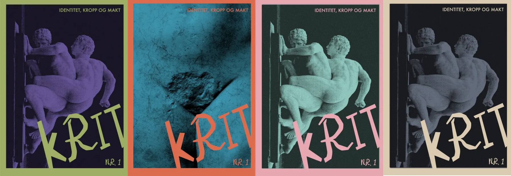
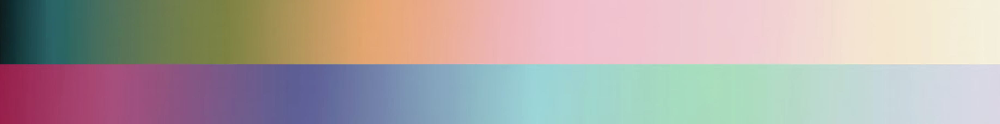
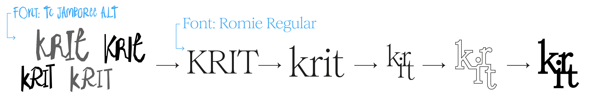
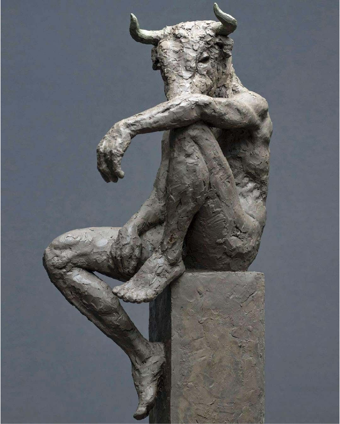
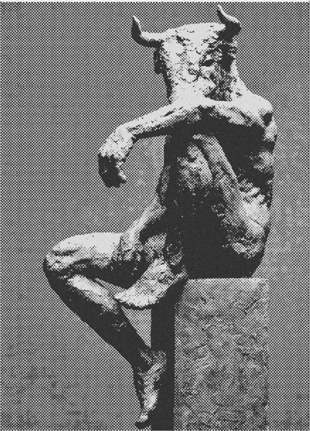
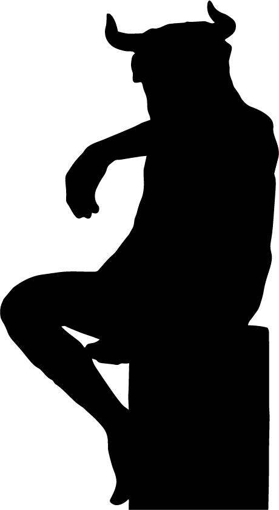
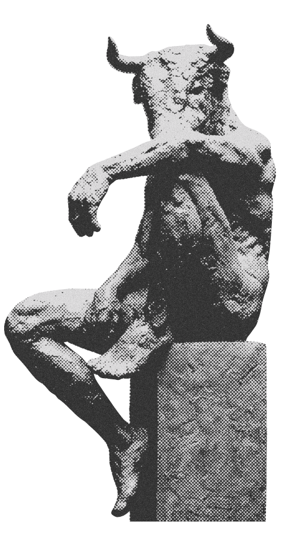
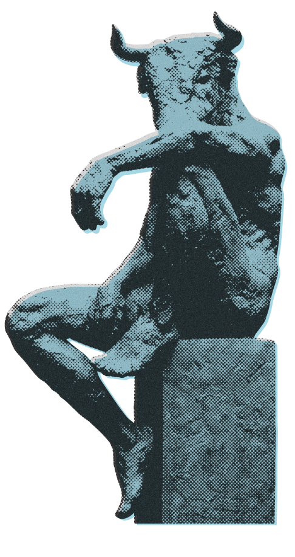
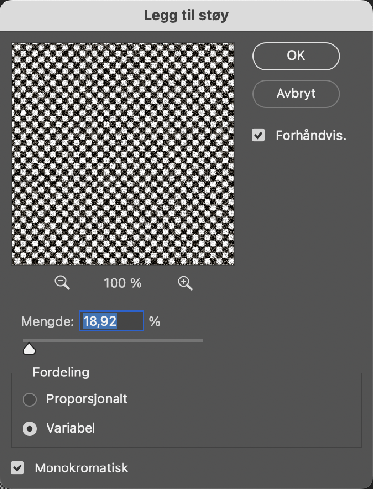
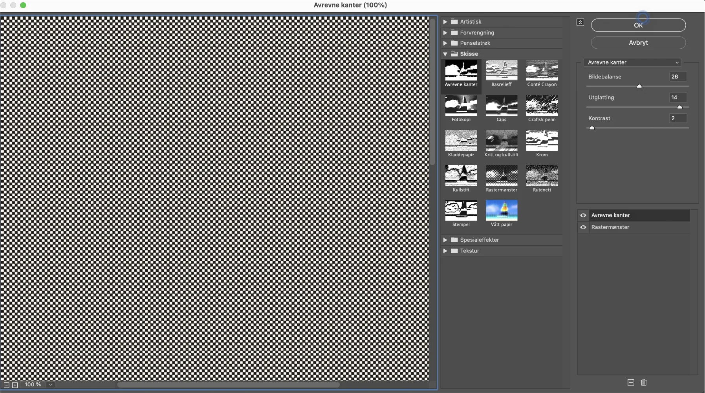

Litteratur
tidsskrift
PROSESS
Prosessfaser
Innsikt
Før jeg i det hele tatt startet, satt jeg med en følelse av at litteraturmiljøet ofte kan føles litt «støvete» og utilgjengelig for unge voksne. Jeg ønsket å undersøke om man kunne lage et tidsskrift som føltes like hipt som et motemagasin, men med den intellektuelle tyngden til et klassisk litteraturskrift. Spørsmålet var: Hvordan pakker man inn tunge tekster om kropp og makt på en måte som gjør at de føles relevante i 2026?
Prosess og utvelgelse
Rammene for oppgaven var herlig åpne; jeg stod helt fritt til å være så streng eller så eksperimentell jeg bare ville. For å skape den rette nerven, håndplukket jeg tekster som balanserte det sårbare med det brutale:
- Litterær tekst: Den hvite T-skjorten av Olav Fangen.
- Essay: Ære blant tryneprylere av Erik S. Røkkum.
- Essay: Fra de skitneste sportshallene i Paris til tennisens katedral av Sigrid E. Strømmen.
- Kritikk: Dødens dilemmaer av Sigrid S. Strømmen og Elektrolysesang av William S. Mørch.
Iterasjon

Jeg startet med et gult og svart uttrykk fordi jeg opplevde fargekombinasjonen som moderne og relevant for et litterært magasinlayout. Den sterke kontrasten kunne gitt magasinet en tydelig og samtidsrettet identitet. Etter hvert så jeg likevel at jeg brukte uttrykket på en litt ustrukturert måte. Det oppsto for mange ulike visuelle retninger samtidig: gule filter på bilder, gule og svarte illustrasjoner, svart-hvitt-fotografi og mange varianter av samme font i ulike vekter. I stedet for å skape en tydelig helhet, gjorde dette at uttrykket ble mer kaotisk og mindre redaksjonelt.
Jeg brukte tid på å vurdere Jambore-fonten fordi det organiske og menneskelige uttrykket passet godt til magasinets personlige og kroppslige tematikk. Fonten hadde også en interessant kobling til konseptet gjennom designeren Tom Chalky, noe som ga valget en ekstra dimensjon.
Etter hvert så jeg likevel at fonten ikke fungerte godt nok i praksis. Den hadde begrenset lesbarhet, spesielt i større tekstgrader og overskrifter, og logoen fikk et uttrykk som ble for lekent og uformelt. Jeg valgte derfor å gå bort fra Jambore for å få et mer presist, redaksjonelt og helhetlig visuelt uttrykk.
Fontvalg i prosess — Jambore


Her ser du litt av reisen gjennom ulike oppslag og visuelle retninger. Jeg har lekt meg med alt fra svart-hvitt-bilder og fargeflater til ulike typer skulpturer for å finne den rette nerven.
Til slutt landet jeg på retningen helt til venstre. Den hadde rett og slett den beste «punchen» – kontrastene er tydeligere, og balansen mellom bilde og tekst føltes mest harmonisk.
Hvorfor skulpturer?
Siden tidsskriftet dykker ned i temaer som kropp, identitet og det å være menneske, trengte jeg et motiv med tyngde. Skulpturene fungerer perfekt fordi de er så fysiske og konkrete, samtidig som de har en viss distanse som gjør uttrykket tidløst og profesjonelt.
Det er noe spennende i møtet mellom det harde, kalde materialet og de sårbare tekstene. Det føles nesten som om de flyktige følelsene i teksten blir hugget i stein og bevart for ettertiden.
Fargene som setter stemningen


Jeg har brukt gradienten som en slags «fargebank» for hele prosjektet. Ved å plukke ut ulike kombinasjoner fra denne skalaen, kan jeg gi hvert nummer av magasinet en helt egen nerve, uten at vi mister den røde tråden.
Her er tankegangen bak de ulike retningene:
- Kontrast og energi: I den oransje og blå varianten har jeg gått for farger som skriker litt høyere. Det skaper en visuell spenning som passer perfekt når temaet er makt eller konflikt.
- Sårbarhet og nærhet: Ved å bruke de dusere tonene som rosa, lilla og beige, får uttrykket en helt annen varme. Disse fargene føles mer intime og menneskelige, og underbygger tekstene som handler om kropp og identitet.
- Moderne møter klassisk: De vibrante fargene fungerer som et friskt motstykke til de tunge, klassiske skulpturene. Det gjør at magasinet føles moderne og aktuelt, samtidig som det beholder sin redaksjonelle tyngde.
Det morsomste med denne metoden er at magasinet kan endre personlighet fra utgave til utgave, men du ser likevel med én gang at det er KRIT du holder i hånden.
I den endelige løsningen valgte jeg å roe ned fargebruken et par hakk for å finne en enda bedre balanse. Ved å skru ned opasiteten på de komplementære fargene, sørger jeg for at de ikke «stjeler» for mye oppmerksomhet fra tekstene og skulpturene.
På denne måten beholder vi de spennende fargekombinasjonene og kontrastene, men de fungerer nå mer som et subtilt bakteppe som løfter frem helheten fremfor å dominere den.
Slik ble logoen til
Jeg begynte i en ganske røff og håndskrevet retning (TC Jamboree ALT), men innså fort at det ble for uformelt og kræsjet med det tidløse, redaksjonelle uttrykket jeg var ute etter.
Derfor byttet jeg til Romie Regular, en klassisk serif-font som ga prosjektet den rette elegansen og tyngden.
For at logoen ikke bare skulle føles som ren tekst, begynte jeg å leke med komposisjonen. Ved å stable bokstavene – la «i» og «t» smyge seg inn under «k» og «r» – forvandlet ordet seg til et kompakt og unikt symbol. Jeg landet til slutt på den solide, svarte varianten fordi den står aller stødigst sammen med det visuelle innholdet.

Løsning
Prosessen: Fra fotografi til grafisk uttrykk
For å skape en unik visuell effekt, kombinerte jeg ulike teknikker i Photoshop og Illustrator. Målet var å gi bildet et mer taktilt og «trykket» preg.
1. Grunnarbeid i Photoshop
Jeg startet med å konvertere bildet til et Smartobjekt. Dette er et avgjørende steg for å jobbe ikke-destruktivt, slik at jeg når som helst kunne gå tilbake og justere filtervalgene uten å ødelegge originalbildet.
2. Tekstur og analog følelse
For å fjerne det digitale preget og legge til karakter, brukte jeg filteret Legg til støy (Add Noise):
- Mengde: Jeg valgte en relativt høy verdi (ca. 19 %) for en tydelig tekstur.
- Monokromatisk: Ved å huke av for dette, unngikk jeg tilfeldige fargeprikker og beholdt en ren, svart-hvit kornstruktur.

Eks. bilde: Minotaur II (2023). Skulptur av Erik Ebeling.

Behandlet i Photoshop med støy og rastermønster (halftone)

Vektorisert i Illustrator for å skape en silhuett

Motivet frilagt ved bruk av Clipping Mask

Fargetilpasning: Fargefyll (#00BCD0) med ca. 50 % opasitet


3. Grafisk bearbeiding (Filtergalleri)
I Filtergalleriet kombinerte jeg to ulike effekter for å skape dybde:
- Avrevne kanter (Torn Edges): Dette ga motivet høyere kontrast og en råere, grafisk form.
- Rastermønster (Halftone Pattern): Dette simulerte en klassisk trykkteknikk og ga bildet en repetitiv, taktil overflate.
- Justering: Jeg finjusterte bildebalanse og utglatting for å bevare motivets gjenkjennelige form, samtidig som overflaten ble røffere.
4. Eksperimentering i Illustrator
Til slutt flyttet jeg uttrykket over i Illustrator. Her utforsket jeg hvordan effekten fungerte i ulike formater:
- Som rent originalbilde og silhuett.
- Som svart-hvitt tekstur og i ulike fargevarianter.
Hva lærte jeg?
Gjennom arbeidet med tidsskriftet lærte jeg hvor viktig det er å balansere et sterkt visuelt uttrykk med god lesbarhet. Jeg ønsket å skape et tidsskrift med tydelig karakter, inspirert av kritikk, kropp, kultur og fysisk erfaring. Bruken av kontraster, halvtonebilder og store typografiske grep bidro til et uttrykk som føles energisk og særegent.
Samtidig ser jeg i etterkant at enkelte oppslag kunne hatt en roligere struktur. Noen steder blir uttrykket så visuelt aktivt at det kan konkurrere med teksten. Jeg kunne derfor jobbet mer med luft, marger og tydeligere hierarki, spesielt på sider med mye brødtekst. Dette ville gjort leseropplevelsen mer balansert og gitt de eksperimentelle sidene enda større effekt.
Jeg lærte også at et godt tidsskrift ikke bare handler om enkeltoppslag, men om rytmen gjennom hele publikasjonen. Variasjonen mellom rolige tekstsider og mer uttrykksfulle bildesider er viktig for at magasinet skal oppleves helhetlig. Videre ville jeg vært mer konsekvent med typografiske detaljer, bildetekster og plassering av enkelte elementer for å styrke den redaksjonelle profesjonaliteten.
Alt i alt har prosjektet lært meg å være modigere visuelt, men også mer kritisk til når et designgrep faktisk støtter innholdet, og når det først og fremst blir dekorativt.